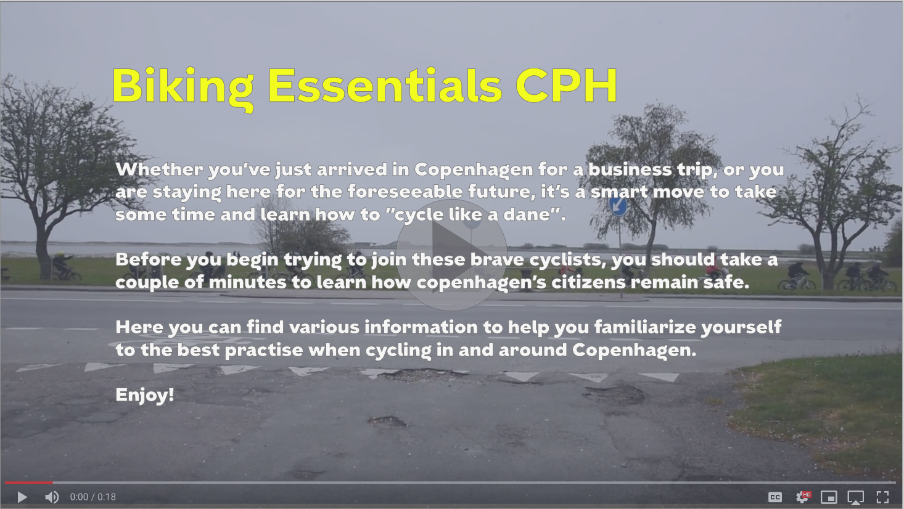

Basic
Content
In this theme I got my first taste of video content creation. I learned how to work from a treatment and continued my work with storyboards, wireframes and prototyping.
03.02.01
For this theme I had my second encounter with a large group project. In order for everyone in the group to be on the same page we used a team canvas to create a kind of group contract.
When we created the canvas we all seemed to be on the same page, however, we soon found issues within the group.
In a future group I believe a better set of rules and more aligned values would have avoided these issues.
03.02.01 -
Team Canvas
03.02.03
We encountered our first problem when creating our storyboard. One group member was dissatisfied with the decision to make multiple short films and from this point on he disengaged from the project almost completely.
Despite all this we were able to create a storyboard following the same protagonist in different scenarios where he showed the right and wrong way to bike.
03.02.03 - Storyboard
Download03.02.04
Besides the video production we also had to create a website inspired by a brochure about biking in Copenhagen. Furthermore, we had to use the design guide provided by Københavns Kommune, which was a great way to learn how to work within certain restraints.
03.02.04 - XD Prototype
Open03.02.05
For this project I took the lead of coding.
One element of code I am really proud of is the breadcrumb that shows how far you have scrolled.
I did so by using Javascript to track the scrollbar and tricker different CSS animations depending on the scroll-value.

03.02.05 -
Link to Website